A compact Tesla driver display that brings essential driving information into the driver's line of sight.
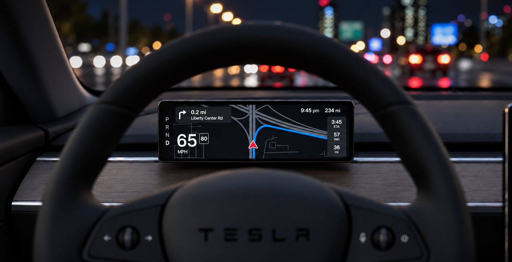
Eyes Forward explores what a first-party Tesla driver display could be. I researched how Tesla drivers use the center screen, tested a forward navigation setup in real cars, and used those findings to determine what information belongs directly in front of the driver.
The problem
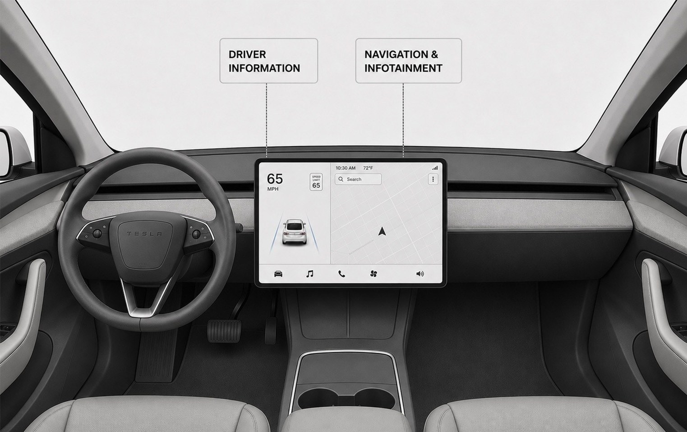
Tesla’s center screen creates a clean cabin, consolidates controls and removes much of the visual clutter found in conventional car interiors
Frequently checked driving information, including speed, speed limit, navigation, and safety alerts, sits outside the driver’s forward line of sight.
Tesla already groups driver-critical information closest to the driver, but that information still lives on the center display rather than directly in front of the driver. Each glance is brief, but those glances repeat throughout a drive, creating unnecessary visual and cognitive effort.
The opportunity was to move the highest priority information closer to the road without recreating the visual density of a traditional instrument cluster.
The number of aftermarket driver displays suggests clear demand for driver-facing information, but these products also highlight the limitations of adding a separate system. Current aftermarket driver displays cannot integrate with Tesla’s native navigation. As a result, third-party displays cannot show Tesla’s native turn-by-turn guidance, forcing navigation to remain on the center screen.
Research
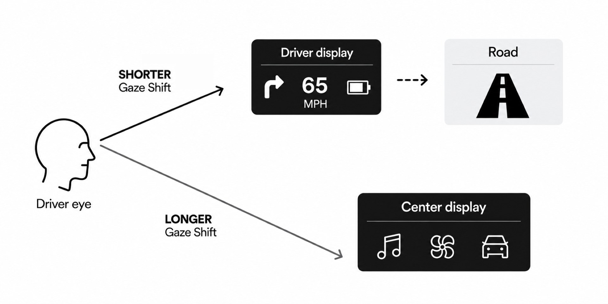
This means how far a driver's gaze moves away from the forward road. Across my research, I found that visual detection becomes more difficult as information moves farther from the driver’s forward field of view. The goal was not to eliminate every glance away from the road, but to reduce how far the driver needs to look for frequently referenced information.
Summala, Lamble & Laakso (1998), Accident Analysis & Prevention 30(4), 401-407. Lamble, Laakso & Summala (1999), Ergonomics 42(6), 807-815. Wittmann et al. (2006), Applied Ergonomics 37(2), 187-199.
Frequently referenced driving information should stay as close to the driver's forward visual field as possible.
I interviewed 5 Tesla drivers with different levels of FSD (Full Self Driving) usage to understand how they interact with the center screen during everyday driving.
After answering interview questions, each participant drove their own Tesla with a smartphone mounted behind the wheel. Google Maps was set to the same destination as Tesla's built-in navigation, giving participants turn-by-turn guidance directly in front of them while driving normally to an unfamiliar location.
The phone did not represent the final interface, but it was a quick way to test one thing: What does it feel like to have frequently referenced information behind the wheel?
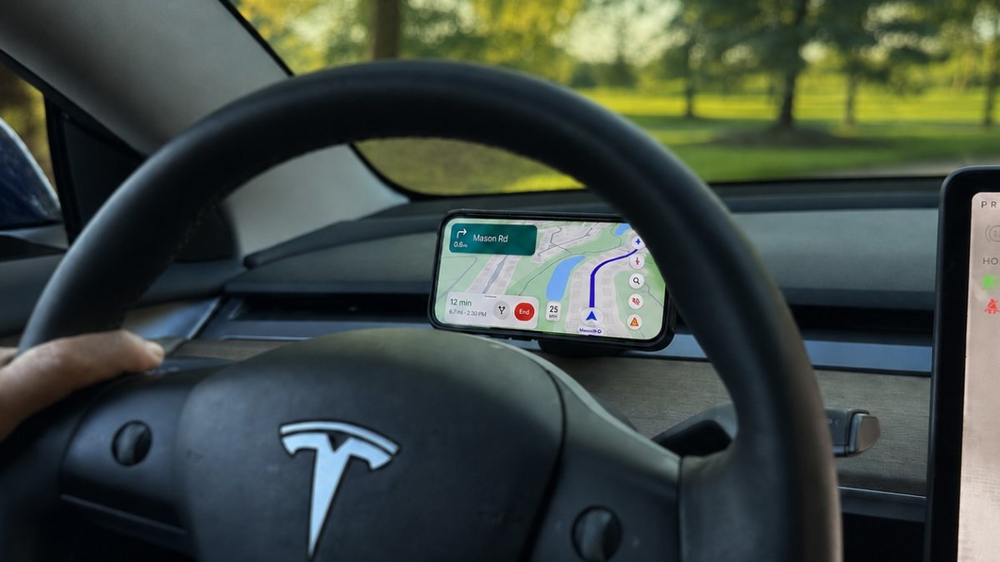
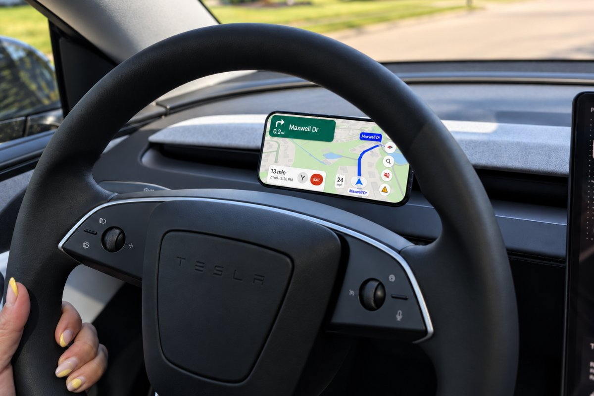
Participants unanimously described the placement of forward display as more comfortable to reference. It’s not that the Tesla center display was not showing the information they needed. The benefit of the driver display comes from reducing the repeated eye and head movement required to retrieve basic information throughout the drive.
“It’s about the line of sight. For comfort, having it in front is much better.”
“Much easier to see. A quick glance, you don’t have to turn your head.”
“The navigation interface is nice, but it’s way too far”
Drivers did not want another display showing the same information (as the center display). They wanted a specific set of information placed more deliberately. Speedometer, speed limit, navigation guidance, and remaining range came up most consistently. Navigation was especially important to the majority of drivers. Participants described using it frequently, even on familiar routes.
“The most important thing is really the navigation, and then your speed.”
“Speed, directions, miles remaining, time, ETA.”
Participants rarely relied on Tesla's full FSD visualization (presented on center display) when deciding whether to take control of the car. They almost always recognized mistakes through the behavior of the vehicle itself, such as unexpected braking, hesitation, or choosing the wrong path.
“There’s no decision I need to make from it. It’s just a nice thing to look at.”
“Yeah, I don’t really need to see that 3D stuff at all… maybe it can go in the corner but smaller”
Two participants emphasized that they would like one question to be more obvious: Is FSD on right now? Who is controlling the vehicle?
“It should be a bit more obvious (who is in control).”
“There is not a single piece of information that is more critical.”
Because glance-critical information was now being displayed behind the steering wheel, it no longer needed to permanently occupy a large portion of the center display. That space could instead be dedicated to navigation, media, climate controls, and other touchscreen interactions.
“Now this big screen can be used for something else.”
“In fact, this main display can actually become more useful now.”
Keep glance-critical information in the driver's line of sight and leave secondary information/controls to the center display.
The opportunity was not simply to add another screen. It was to create one cohesive interface across two displays. The phone demonstrated what navigation could feel like directly in front of the driver, but it remained a separate system. A native display could share the same navigation session as the center screen, eliminating duplicate destination entry while also showing range, FSD state, vehicle alerts, and other real-time information.
I carefully studied what information was available to users via the native Tesla center display and organized that information into 3 levels of priority.
What do I need for immediate driving decisions?
What is the current status of my vehicle or trip?
What else might be useful?
Iteration
I explored different ways to arrange the same core information across the display. I tested the placement of navigation, speed, ETA, range, and vehicle status, looking for a layout that kept glance-critical information easy to scan.
Across these studies, the direction became more clear. The most successful layouts gave the map ample space and grouped Tier 1 Information, giving it the strongest visual priority.
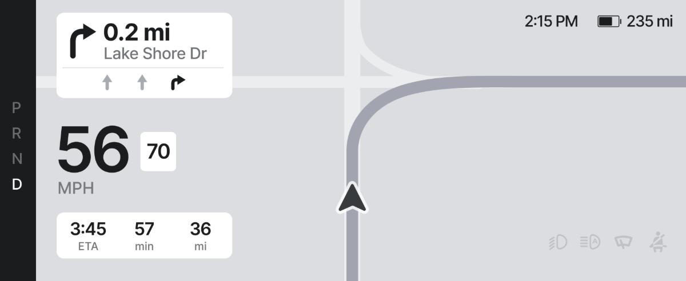
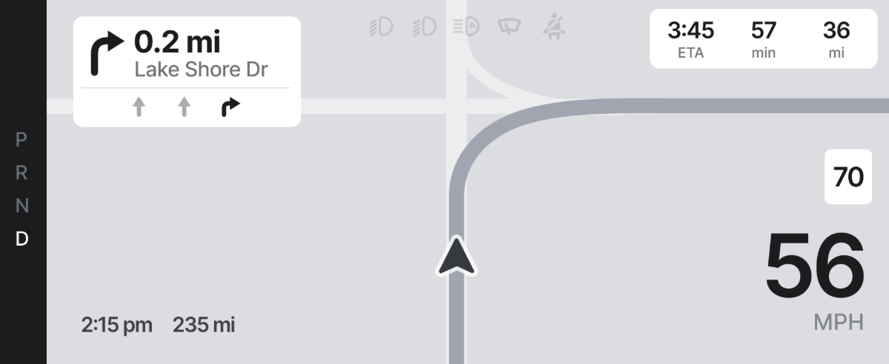
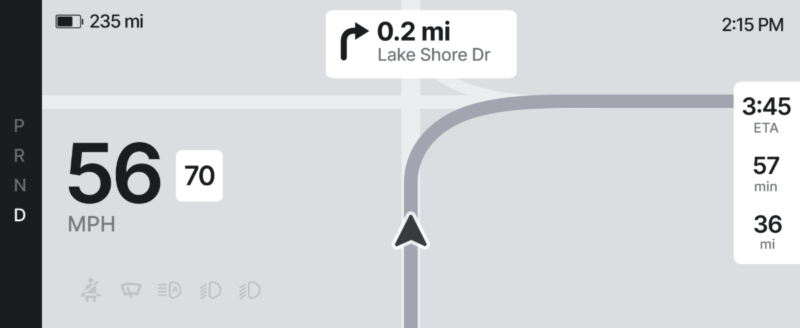
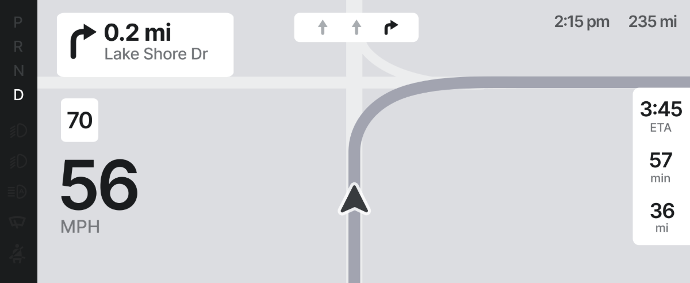
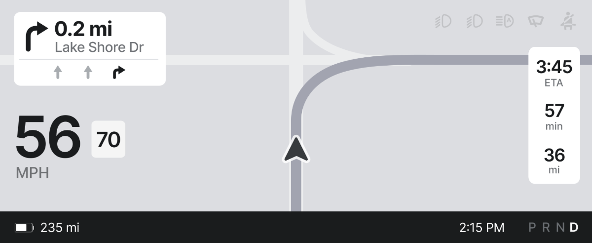
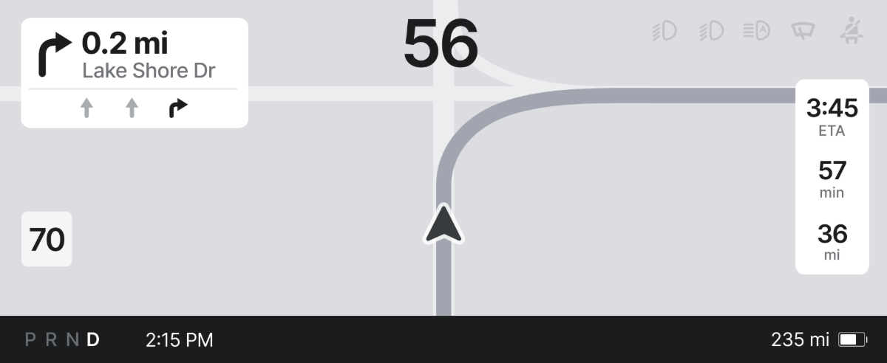
The final concept keeps the driver's most frequent questions visible at a glance: How fast am I going? What's my next maneuver? And when do I need to make it? Supporting information stays present but secondary.
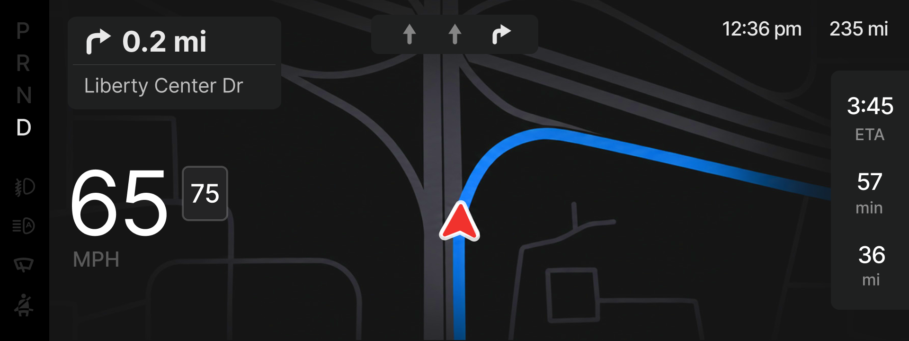
The study helped me discover that drivers didn’t want more information in front of them. They wanted a more focused set of information made easier to access. The value of the concept came less from adding extra screen area and more from distributing information more intentionally.
By giving critical driving information a dedicated place behind the wheel, the driver display also allows the center display to serve a clearer purpose.
The strongest case for a native Tesla driver display is not that it can show everything from the center display, but that it allows both displays to be used in a more purposeful role, creating a more comfortable and complete driving experience.